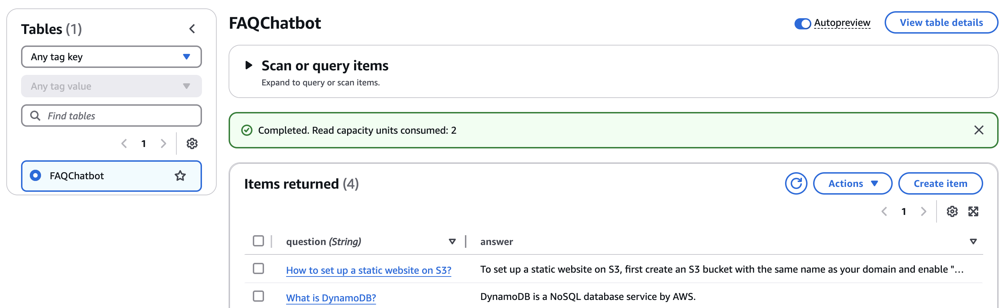
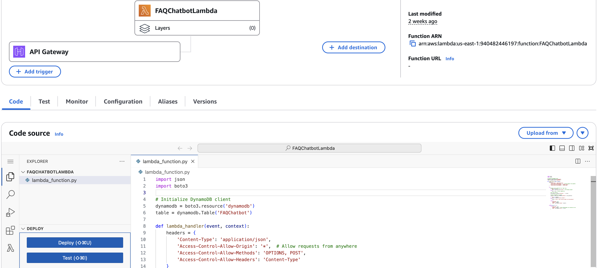
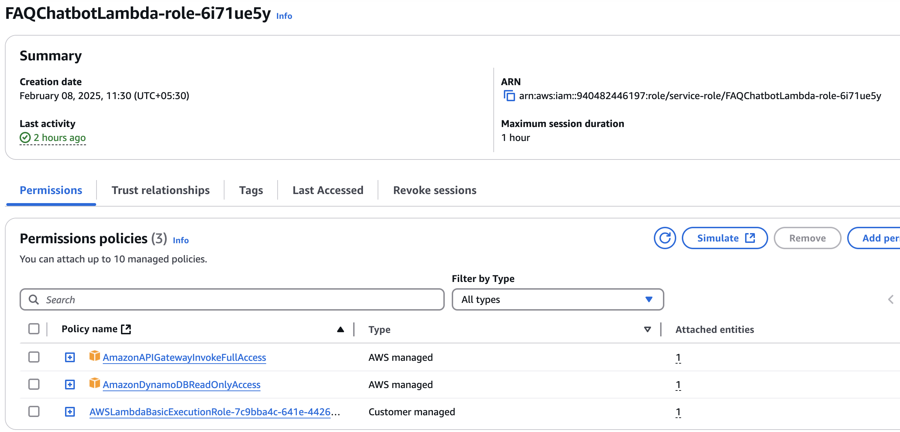
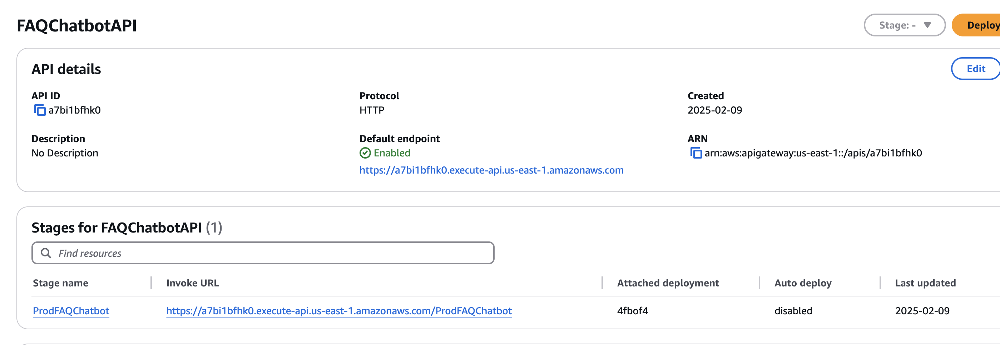
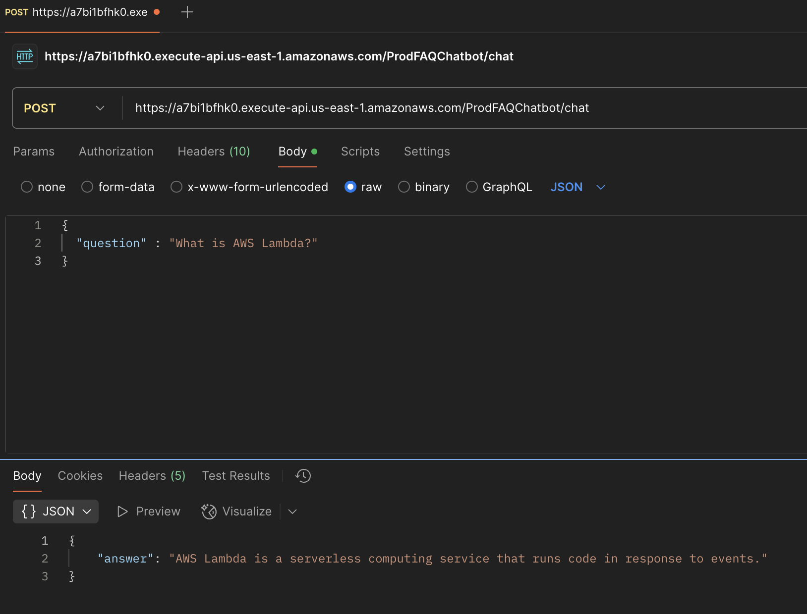

Automated Deployment for static
Deploy a chatbot using AWS Lambda, API Gateway, and DynamoDB.
Step-by-Step Implementation
1. Create a DynamoDB Table
Go to the AWS Console, navigate to DynamoDB, and create a new table. Set question as the partition key and add an attribute answer. This will store the frequently asked questions and their corresponding responses.
2. Insert Sample Data
Manually insert sample data into the table. Each entry should have a unique question and a corresponding answer that the chatbot will retrieve.
3. Create a Lambda Function
Go to AWS Lambda, create a new function, and choose Python or Java as the runtime. Write a script that fetches an answer from DynamoDB when a user inputs a question.
import boto3
import json
import boto3
# Initialize DynamoDB client
dynamodb = boto3.resource('dynamodb')
table = dynamodb.Table('FAQChatbot')
def lambda_handler(event, context):
headers = {
'Content-Type': 'application/json',
'Access-Control-Allow-Origin': '*', # Allow requests from anywhere
'Access-Control-Allow-Methods': 'OPTIONS, POST',
'Access-Control-Allow-Headers': 'Content-Type'
}
try:
# Handle direct Lambda test (no 'body' key)
if 'body' in event:
body = json.loads(event['body']) # API Gateway request
else:
body = event # Direct Lambda test
# Get user question
user_question = body.get('question', '').strip()
# Search DynamoDB for an answer
response = table.get_item(Key={'question': user_question})
if 'Item' in response:
answer = response['Item']['answer']
else:
answer = "Sorry, I don't have an answer for that question."
return {
'statusCode': 200,
'headers': headers,
'body': json.dumps({'answer': answer})
}
except Exception as e:
return {
'statusCode': 500,
'headers': headers, # Ensure CORS headers are returned on error
'body': json.dumps({'error': str(e)})
}
4. Attach IAM Policy to Lambda
Attach an IAM policy that grants Lambda read access to DynamoDB.
5. Create API Gateway
Create an API Gateway, set up a POST method, and integrate it with the Lambda function.
6. Deploy API and Update IAM Role
Deploy the API and ensure the Lambda role includes permissions for API Gateway execution.
7. Test Using Postman
Use Postman to send a POST request to the API endpoint and check if it fetches the correct response.
8. Set Up CloudFront
Configure Amazon CloudFront to serve your chatbot frontend for better performance and security.